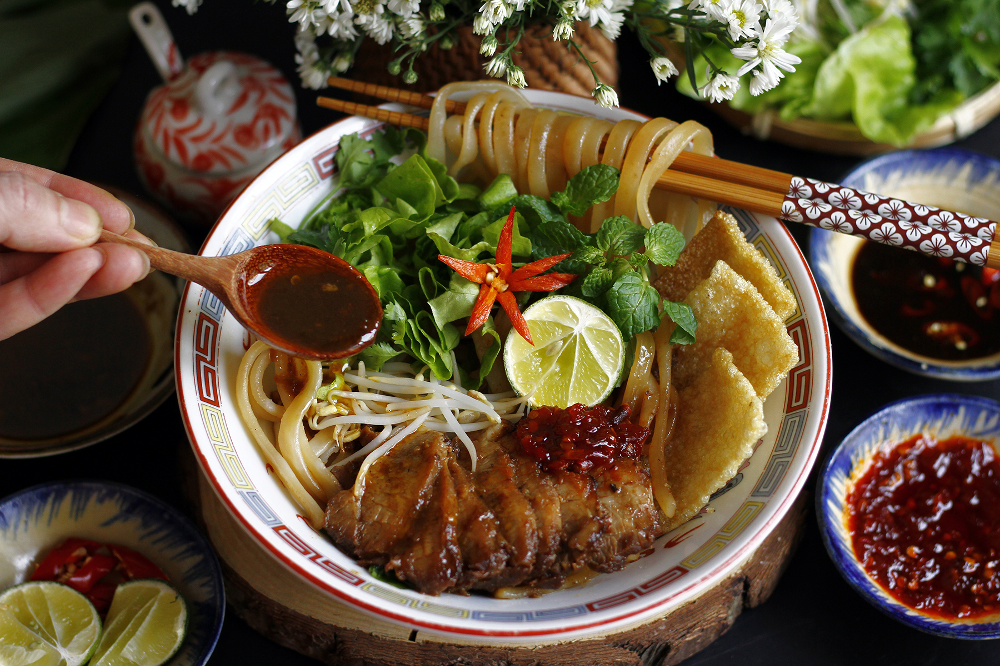
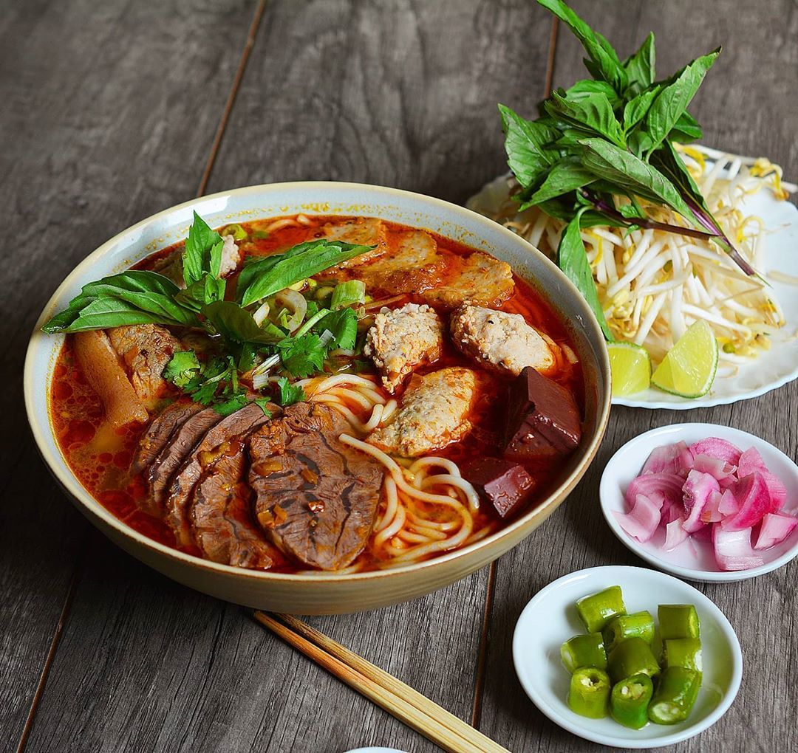

ẨM THỰC VIỆT NAM
Ẩm thực Việt Nam nổi tiếng với sự phong phú, đa dạng và sự hòa quyện hài hòa giữa các nguyên liệu.
1. Phở

Thành phần: Bánh phở, thịt bò hoặc gà, nước dùng, hành, ngò gai, và gia vị...
Mô tả: Phở là món ăn quốc dân của Việt Nam, được yêu thích bởi hương vị thanh nhẹ và nước dùng đậm đà, được nấu từ xương bò hoặc gà trong nhiều giờ.
2. Bánh Mì

Thành phần: Bánh mì, pate, thịt nguội, rau sống (dưa leo, ngò, hành), và các loại nước sốt (mayonnaise, nước tương)...
Mô tả: Bánh mì Việt Nam là một sự kết hợp hoàn hảo giữa bánh mì Pháp và các nguyên liệu Việt Nam, tạo nên một món ăn đường phố ngon miệng.
3. Gỏi Cuốn
Thành phần:Bánh tráng, tôm, thịt heo, bún, rau sống (xà lách, húng quế), và nước chấm...
Mô tả:Gỏi cuốn là món ăn nhẹ, tươi mát, thường được chấm với nước mắm pha chua ngọt hoặc nước tương pha đặc biệt.
4. Bún chả
Thành phần:Bún, thịt nướng, chả viên, nước mắm pha, và rau sống....
Mô tả:Bún chả là món ăn nổi tiếng của Hà Nội, với thịt nướng và chả viên được nướng trên than hoa, kết hợp cùng bún và nước mắm pha.
5. Cao Lầu
Thành phần:Mì, thịt xá xíu, tôm, rau sống, và nước dùng...
Mô tả:Cao lầu là món ăn đặc sản của Hội An, với mì sợi đặc biệt được làm từ nước tro, tạo nên hương vị và màu sắc đặc trưng.
6. Bún Bò Huế
Thành phần:Bún, thịt bò, giò heo, nước dùng, và rau sống....
Mô tả:Bún bò Huế là món ăn đặc sản của Huế, với nước dùng cay nồng, đậm đà, tạo nên hương vị đặc trưng không lẫn vào đâu được.
7. Chả giò
Thành phần:Bánh tráng, thịt heo, tôm, miến, nấm mèo, và rau sống...
Mô tả:Chả giò là món ăn chiên giòn, thường được chấm với nước mắm pha chua ngọt, rất phổ biến trong các bữa tiệc và dịp lễ Tết...
8. Bánh Xèo

Thành phần:Bột gạo, nước cốt dừa, tôm, thịt, giá đỗ, và rau sống...
Mô tả:Bánh xèo là món ăn vặt giòn tan, thường được ăn kèm với rau sống và nước mắm pha chua ngọt.
9. Hủ Tiếu
Thành phần:Hủ tiếu, thịt heo, tôm, lòng heo, và rau sống....
Mô tả:Hủ tiếu có nguồn gốc từ người Hoa, là món ăn sáng phổ biến ở miền Nam Việt Nam, với nước dùng trong và đậm đà.
10. Mì Quảng

Thành phần:Mì, thịt heo, tôm, trứng, và rau sống...
Mô tả:Mì Quảng là món ăn đặc sản của miền Trung Việt Nam, với nước dùng ít hơn so với các loại mì khác, tạo nên hương vị đậm đà và đặc trưng.
11. Kẹo dừa
Món kẹo dừa Bến Tre là một đặc sản nổi tiếng của Việt Nam, đặc biệt là ở tỉnh Bến Tre. Kẹo dừa Bến Tre có lịch sử phát triển rất lâu đời và đã trở thành biểu tượng của nền văn hóa tỉnh nhà Kẹo dừa Bến Tre bắt nguồn từ thế kỷ 19, khi người dân địa phương bắt đầu chế biến kẹo từ dừa tươi. Ban đầu, kẹo dừa chỉ là một món ăn phụ cho bữa ăn gia đình, nhưng sau này, người dân đã nhận ra tiềm năng kinh tế của sản phẩm này và bắt đầu sản xuất kẹo dừa trên quy mô lớn.
Trong thời kỳ kháng chiến chống Pháp, kẹo dừa Bến Tre đã trở thành một nguồn thu nhập quan trọng cho người dân, giúp họ tự lực tự cường trong cuộc sống. Sau năm 1975, ngành kẹo dừa Bến Tre tiếp tục phát triển mạnh mẽ, trở thành một trong những ngành nông sản xuất chính của tỉnh. Hiện nay, kẹo dừa Bến Tre không chỉ được sản xuất và tiêu thụ trong nước mà còn được xuất khẩu sang nhiều quốc gia trên thế giới. Sản phẩm này đã giành được nhiều giải thưởng và đã được công nhận là một trong những đặc sản nổi tiếng của Việt Nam.